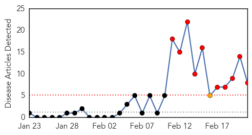
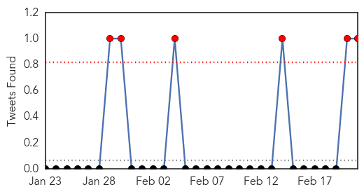
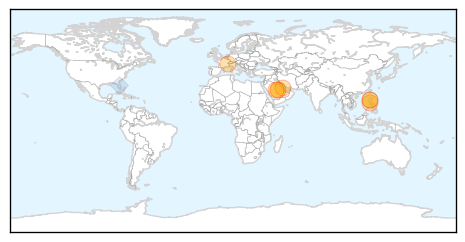
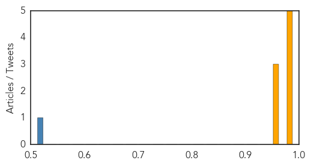

Toggle navigation
Early Warning
Daily Alerts
Middle East Respiratory Syndrome
Feb 21, 2015
Compare to:
-
Dengue Fever
Hemmorhagic Fever
Mold/Fungal Infection
Influenza
Meningitis
Pertussis / Whooping Cough
Cholera
Hepatitis
Chikungunya
Yellow Fever
Bubonic Plague
West Nile Virus
Swine Flu
Ebola
Measles
Unknown
Mumps
30 Day Trends
Web: 10
alerts
, 1
warnings
Twitter: 6
alerts
, 0
warnings
Top Articles:
0.996
MERS kills 17 since Feb. 11; Buraidah woman latest victim
0.996
MERS deaths surge in Saudi Arabia
0.990
MERS deaths surge in Saudi Arabia
0.987
MERS war stepped up in Saudi Arabia as 5 lives lost in 1 day
0.985
Filipino nurse tests negative for MERS
0.972
Saudi Health Ministry Data Show Surge in MERS Deaths
0.965
OFWs in Riyadh give free vaccinations vs spread of MERs-Corona Virus « Bulatlat
0.964
Filipino nurse tests negative for MERS
Top Tweets:
0.512
AFD Blog `Saudi MOH: 2 New MERS Cases 2 Deaths Reported' MERS-CoV
http://t.co/4Sa1D17Mqa
Web/News Articles

Tweets

Article Locations

Article Confidences
